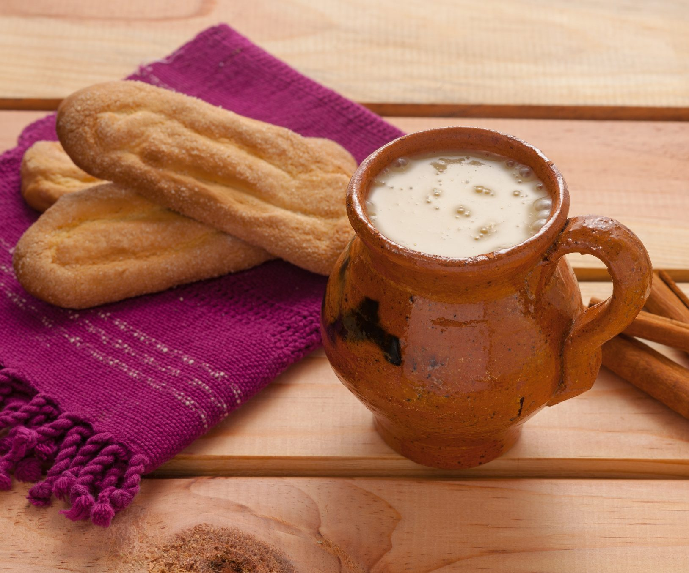

Atol De Elote

What is Atol De Elote?
Atol de elote or atol de maiz is one of Guatemala’s most popular traditional drinks. If you are craving a sweet, comforting drink to warm you up during the holidays, Guatemalan corn atole is for you!
This hot traditional Guatemalan drink is made with sweet corn and flavored with vanilla or cinnamon. It’s a popular Guatemalan street food sold in markets and festivals, especially during the colder months.
It’s also a popular Christmas drink in Guatemala. Fairly quick and easy to make, atol de elote or sweet corn atole is a hot corn-based drink perfect for enjoying in winter.
You can serve this traditional Guatemalan dish during Posadas Navideñas, Christmas holidays, or to take the chill off a cold December morning!
Ingredients
- 6 medium-size yellow corn cobs (about 2 cups of kernels)
- 2 1/2 cups of cold water
- 2 cups of whole milk
- 1 cinnamon stick
- 1 cup of sugar
- 1 teaspoon of salt
- Ground cinnamon for garnish (optional)
- ¼ cup of cooked corn kernels for garnish (optional)
Steps
- Peel and wash the ears of corn thoroughly and cut the kernels off. Put them and their juices aside. Throw away the cobs.
- Put the kernels and about 1 cup of water on a high-powered blender and blend until they are coarsely grounded. Add the rest of the water and keep blending until smooth.
- Pour the kernel mixture onto a large pot, add milk, cinnamon stick, sugar, and salt. Bring to a low boil on medium-low heat for about 20 minutes.
- Stir constantly to avoid the mixture sticking to the bottom.
- Lower the heat and let it simmer for about 15 minutes until it thickens. Serve the atol warm and in cups, garnishing with a sprinkle of ground cinnamon, and top with a handful of cooked corn kernels.